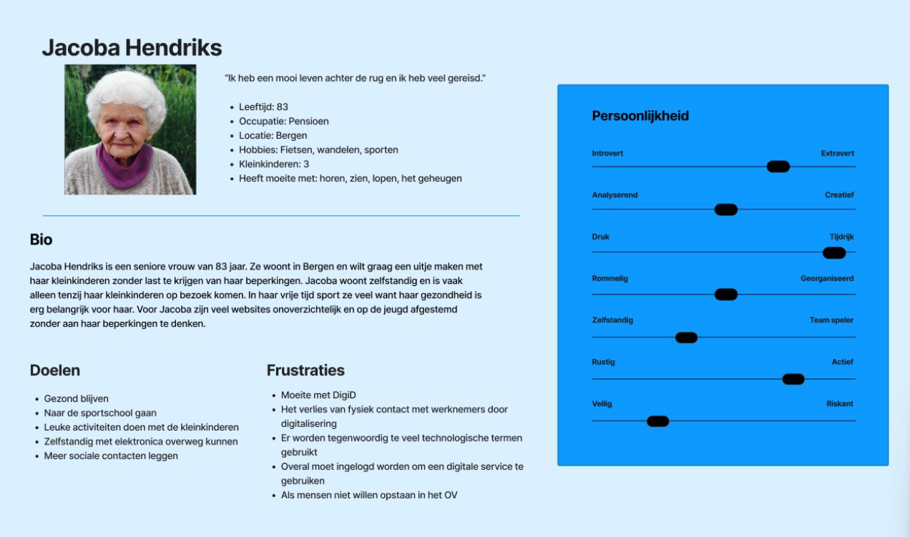

CLE 3
In CLE 3 moest ik samenwerken met Carisia, Jaden en Raymond om een site te maken voor senioren. Maar voordat wij de site maakten, moesten wij ook andere dingen doen.
In het begin maakten wij een samenwerkingsdocument. Daarin staan de regels die wij allemaal moeten volgen. Vervolgens hadden wij een handtekening geplaatst, waardoor de regels voor ons gelden.

Daarna hadden wij gebrainstormd over onze doelgroep. Tijdens de les moesten wij binnen een paar minuten
schetsen maken die te maken hadden met onze doelgroep. Het idee hierachter was dat wij onze doelgroep beter
leerden kennen door over hun na te denken en daarna te schetsen. We maakten een schets van een senior en een
plek waar die senior een uitstapje zou doen.
Op de linkse afbeelding heb ik een senior getekend die aan het lopen is. Dat was toen mijn beeld van een senior.
Op de rechtse afbeelding heb ik een museum getekend met een paar schilderijen en de botten van een dinosaurus.
Ik dacht dat een museum een leuke plek was voor ouderen om te bezoeken.

Hierna maakten wij een persona. In de persona staat informatie over een fictieve persoon die te maken heeft met onze doelgroep. De persoon is Jacoba Hendricks, een 83 jarige seniore vrouw uit Bergen. Ze is op pensioen en haar hobbies zijn fietsen, wandelen en sporten. Ze wil graag een uitje maken met haar kinderen zonder dat ze last krijgt van haar beperkingen. Ze heeft als doel om gezond te blijven en leuke activiteiten te doen met haar kleinkinderen. Haar frustraties zijn onder andere dat ze moeite heeft met digID en dat er tegenwoordig veel technologische termen gebruikt. Jacoba Hendriks is best actief en houdt niet van riskant zijn.

We hadden ook een prototype gemaakt voor onze site. De prototype geeft ons een beter beeld hoe de site er
ongeveer eruit moet zien. Nadat we klaar waren met onze prototype, gingen wij de echte site maken. Ik
maakte de contactpagina. Carisia deed de over ons pagina, Jaden de uitjespagina en Raymond de inlogpagina.
Op mijn pagina kun je contact leggen met ons. Dat kan via een telefoonnummer of mailadres. Ook kun je
naar de hoofdlocatie gaan. Als je op "hoofdlocatie" of op de kaart klikt, dan kom je naar een pagina van
google maps. Je kunt ons ook een cijfer geven. Als het contact leggen goed ging, dan kun je ons
een hoge cijfer geven.
Aan het einde van CLE 3 hadden wij een presentatie gegeven over onze site. Wij hadden samen een uur de tijd om te presenteren. We besloten om allemaal een kwartier lang te presenteren.
CLE 4
BINNENKORT